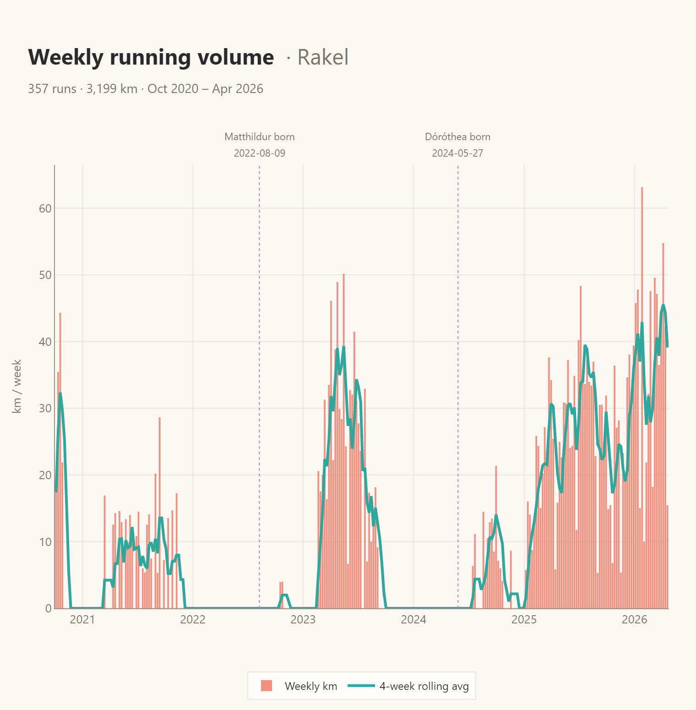
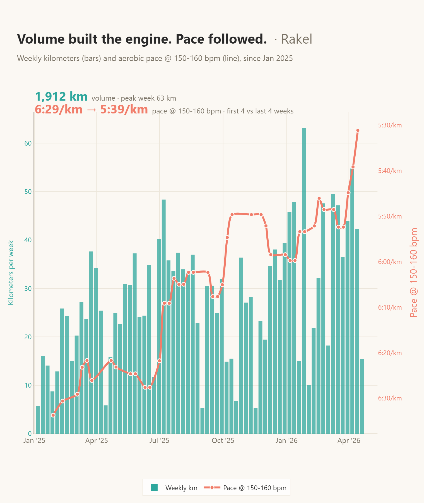
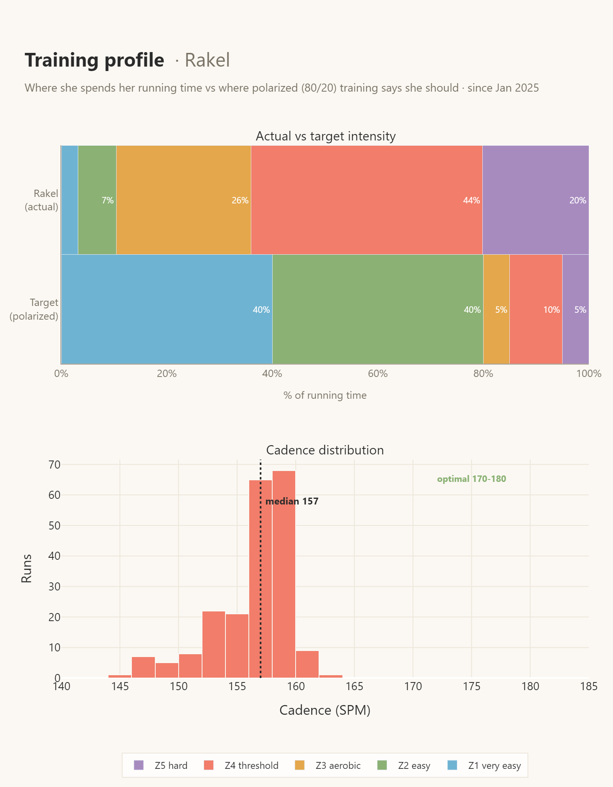

Rakel's running decoded
209 runs. 1,912 km. A big, clear story in the data — and three obvious levers for the next chapter.

What's genuinely great
Three things she should keep doing exactly as she's doing.
209 runs over 68 weeks = 3.1 runs/week, virtually no gaps. She ran 44% of all calendar days since January. Volume sits comfortably around 28 km/week with some natural build/recovery wobble — more consistent than a lot of club athletes.
Pace at 150–160 bpm dropped 50 s/km (6:29 → 5:39). EF +11.8% at the same HR. Speed gains come from longer stride (+5.3%), not cadence — that's the signature of aerobic development, not just "trying harder".
22 runs ≥90 min since Jan 2025 (one every 10 runs), longest 130 min / 21 km. Plenty of endurance substrate for half-marathon and beyond.

Where she's over-invested
Three patterns costing her adaptation without buying much fitness.
Biggest single finding: 64% of her running time is ≥160 bpm (threshold and above). For a recreational athlete aiming to build fitness, polarized (80/20) theory says only ~15% should be hard. She's 4× over. Only 10% is truly easy.
Easy-HR median pace (6:08/km) is only 12% slower than her best 5 k pace (5:28/km). A healthy ratio is 20–35% slower. Translation: her "easy" runs are almost race pace. They cost a lot of recovery and return little aerobic benefit.
32 of her 133 threshold/hard runs (24%) came with less than 36 hours of recovery before them. Compromises adaptation and slowly accumulates fatigue.

Where she's under-invested
Three zones with the highest return-on-effort for the next 12 weeks.
Only 10% of time below 145 bpm. Should be 60–80%. This is the zone that builds mitochondria, capillary density, and fat oxidation — the slow-but-decisive adaptations.
Median 157 SPM, zero runs ≥170. Optimal range is 170–180. Low cadence implies overstriding (impact forces on hips/knees) and limits pace efficiency. Her speed gains came entirely from stride length — cadence hasn't budged in 10 months.
~20% of time is Z5 (≥175 bpm), but those samples are mostly drift from threshold runs, not sharp short intervals. Structured intervals (400s, 1 km reps at 5 k pace with full recovery) would create fitness ceiling-raising stimulus without more total load.
Top 5 training tips
In priority order. Doing any one moves the needle; doing three is transformative.
- Enforce easy pace with HR, not feel. On ~3 of 4 runs, cap HR at 145 bpm — walk if needed. Easy pace target: 6:45–7:15/km. It will feel insultingly slow for 2–3 weeks, then she'll start finishing long runs without drift and wake up fresh the next day.
- One quality session per week, with real recovery. Pick one: (a) intervals (8 × 400 m at 5 k pace), or (b) tempo (20 min continuous at ~5:45/km). Then 48 hours minimum before the next hard effort.
- Cadence drill, 5 minutes every easy run. Use a 170-bpm metronome or playlist. Small, fast, light steps at any pace. Over 6–8 weeks her median should drift to 165+ — that translates directly to injury-resistance and pace economy.
- Long run goes longer and easier. Her 90-min runs are probably averaging 160+ bpm (threshold long runs). Push one run per week to 2 h at <150 bpm. Slower pace, more benefit.
- Insert a down-week every 4th week. Drop to ~60% volume (≈17 km). Her volume chart shows natural wobble but no systematic deload — planned dips produce bigger super-compensation peaks.
Predicted effect
If she shifts to roughly 70% easy / 10% moderate / 20% hard, holds ~28 km/week, and adds cadence work, pace @ 150–160 bpm should drop another 20–30 s/km — steeper than her current trajectory, because she'll actually be recovering from the hard work.